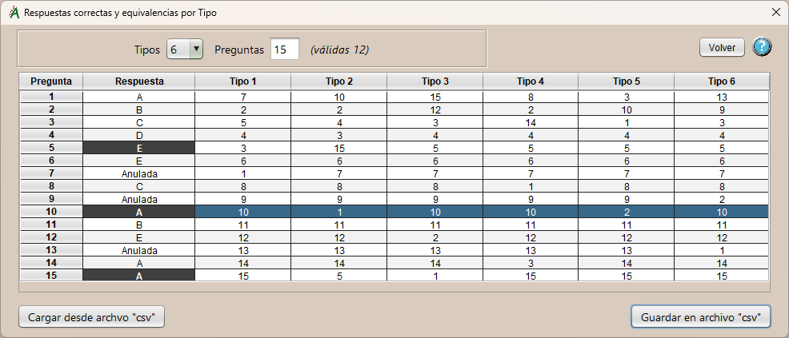
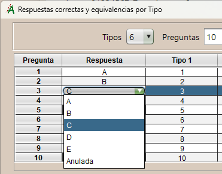

Respuestas, Tipos y Equivalencias.
En esta ventana definimos la cantidad de tipos y preguntas que tiene el examen, a su lado está el total de las que son válidas, las que se tendrán en cuenta para calcular las calificaciones. 
Si hay cambios en la estructura de la tabla ya sea en los tipos o las preguntas, se añadirán los necesarios. Si embargo, si se quitan, se perderán esos datos; a no ser que se haya guardado antes la tabla, usando el botón "Guardar en archivo...".
En la tabla vemos, en las dos primeras columnas, el número de pregunta del tipo maestro y la respuesta correcta a esta; también si está anulada. Si pulsamos en la celda de respuesta podremos cambiar su valor eligiéndolo dentro de un desplegable que contiene los valores posibles: las diferentes opciones de respuesta y el valor "Anulada."
A continuación vemos una columna para cada uno de los tipos definidos. Cada fila representa el número de pregunta de ese tipo, y contiene el número de pregunta del tipo maestro con la que se corresponde.
Botones de acción adicionales:
- Cargar desde archivo "csv":
Importa la tabla de tipos y equivalencias desde un archivo "csv". - Guardar en archivo "csv":
Exporta la tabla de tipos y equivalencias a un archivo "csv".